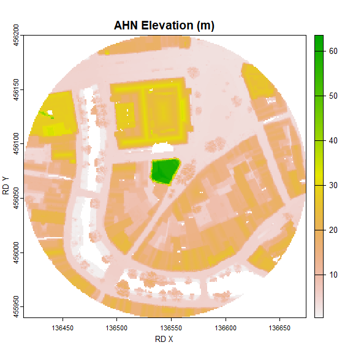
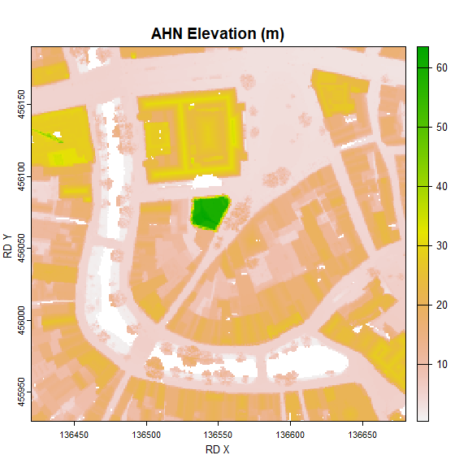
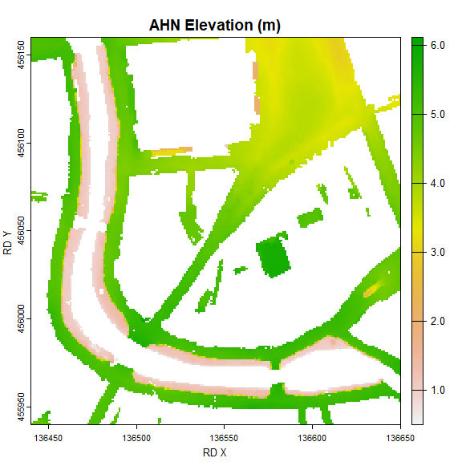
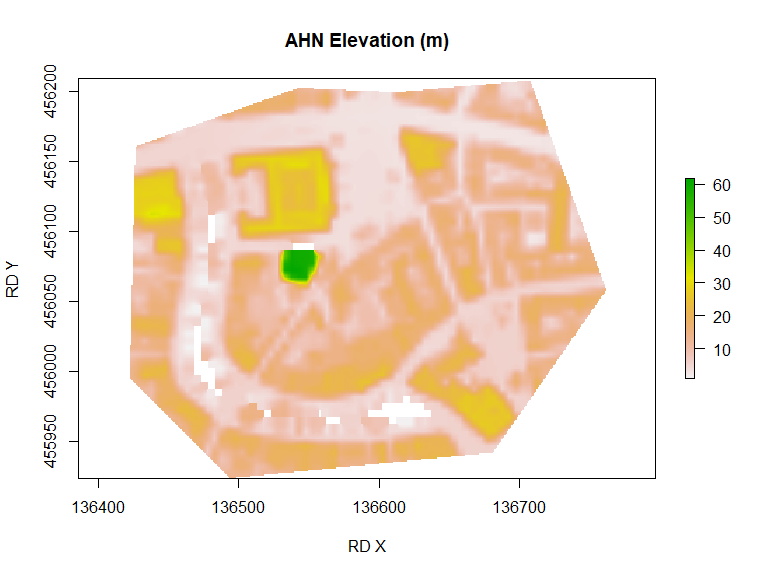
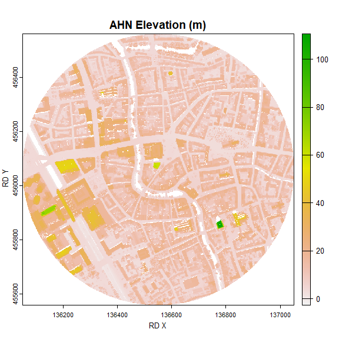

Updated: 11-04-2024
This R package automatically extracts elevation points or areas of the Netherlands from the Actueel Hoogtebestand Nederland (AHN) datasets collected by AHN. Individual elevations, and elevation raster areas can be extracted from the AHN4 using the geo and atom web services that are made available by PDOK. PDOK only makes the most recent AHN available. Currently this is version AHN4. The next release will also support the older versions of AHN which are made available elsewhere.
| Type | AHN5 | AHN4 | AHN 3 | AHN2 | AHN1 |
|---|---|---|---|---|---|
| Resolutions | waiting for data completion | 0.5 m, 5 m* | support will follow | support will follow | support may never follow |
| DEM | waiting for data completion | DSM, DTM | support will follow | support will follow | support may never follow |
| point clouds | support may come in a future release |
*support for 5 m. resolution for AHN4 will follow.
Please refer to the quality documentation provided (in Dutch only) for all the details about the data. AHN is the the organisation that collects AHN data. ## 1. Installation
To download therAHNextract package from GitHub, the library devtools is required. If you want to compile the code from the source code, the program Rtools is needed. Rtools is not required to make use of the rAHNextract package. To plot rasters using plot() the terra package is required.
library(devtools)
devtools::install_github("Jellest/rAHNextract")
library(rAHNextract)
library(terra)2. WCS vs. Sheets method
Retrieving individual AHN elevation points or elevation raster areas can be retrieved through two methods: WCS method or sheets method. The WCS method is the fastest method and makes use of the OGC WCS protocol. The output is a GeoTIFF file. This method is only efficient if a few AHN elevations or areas need to be retrieved.
With the sheets method, the data is retrieved from the 1km x 6.25 km raster sheets (kaartbladen) made made available by PDOK. This method is slower as it needs to download all the sheets required to retrieve the AHN (200-500 mb per sheet). This method is recommended to be used if many (point) elevations need to be retrieved from a certain small area.
For both the points and raster areas, the WCS method is set to default. The sheets method can used by setting sheets.method = TRUE.
3. Method of elevation extraction
Extraction of the elevation is done based on the raster data it receives from the sources. Determining the elevation can be tricky if no correct resampling is applied. The script always ensures a correct resampling takes place by adjusting the raster cells that need to be downloaded whenever necessary. This is called a ‘rectified grid.’ To avoid issues, the extraction calculation is therefore always done in the script and not through a OGC method online. Please refer to this why it is important to always use rectified grids.
Please refer to this to read between the different extraction methods allowed: ‘simple’ (nearest) or ‘bilinear’. In this package the default for the extraction.method parameter is set to ‘simple’.
4. Examples
The examples below show the possibilities of this package by combining the different parameters. The different examples show how different geometries (circle, bbox, or custom polygon) can be retrieved with the raster areas. Please use the complete documentation of the functions in R to see all the available parameters.
If desired, points or areas using the WGS84 coordinate system (Longitude and Latitude coordinates) can be used as input by setting LONLAT = TRUE. For efficiency and accuracy purposes, returned raster areas are always done using the RD New coordinate system (the source).
For ahn_point() and ahn_area() the default output is a temporary file. Set location of directory if you want to keep the raster output (point) using the output.dir parameter.
4.1 Individual AHN elevations points
The ahn_point() function returns the AHN elevation at the provided point.
4.1.1 WCS method
This examples gets the elevation from the AHN (default) using the DSM (default) as the DEM. Changing the DEM type can be adjusted through the dem parameter(“DTM”, or “DSM”)
ahn_point(X = 136544, Y = 456070)
#> [1] "https://service.pdok.nl/rws/ahn/wcs/v1_0/?&SERVICE=WCS&VERSION=1.0.0&REQUEST=GetCoverage"
#> [1] "Download raster image succeeded."
#> [1] "Intersecting raster. Getting elevation..."
#> [1] "Elevation of AHNelevation: 63.57 m."
#> [1] 63.574.1.2 sheets method
The sheets method can used by setting sheets.method = TRUE. AHN sheets are always stored by default in the {current working directory}/AHN_output/AHN_sheets but can be adjusted using the sheets.dir parameter. The sheets will always be stored under the ‘AHN_sheets’ folder under the used AHN and DEM.
This examples gets the elevation from the AHN DSM at the exact same point.
ahn_point(name = "Utrecht point", X = 136550, Y = 456060, AHN = "AHN", dem = "DTM", sheets.method = TRUE)
#> [1] "The AHN sheets are loaded from or downloaded in: C:/Users/jelle/stack/GitHub/rAHNextract/rAHNextract_dev/AHN_sheets. If no AHN sheet in the correct directory or if no correct name of AHN sheet is found, sheet will be downloaded. For first use it is recommended to use the default output directory."
#> [1] "Destination directory of output AHN sheet M_31HZ2.tif: C:/Users/jelle/stack/GitHub/rAHNextract/rAHNextract_dev/AHN_sheets/AHN4/DTM"
#> [1] "Intersecting raster. Getting elevation..."
#> [1] "Elevation of Utrecht point: 4.60 m."
#> [1] 4.6Please see here all the parameters available for ahn_point()
4.2 AHN elevation areas
The ahn_area()returns the AHN elevation raster of the provided area.
4.2.1 WCS method
4.2.1.1 circle
This example gets a circular area from the AHN DSM, and saving its output raster in a custom output directory.
Utrecht_circleWCS <- ahn_area(name = "Utrecht circle", X = 136544, Y = 456070, resolution = 0.5, radius = 130, output.dir = "C:/myProject")
#> [1] "Creating circle from single X,Y point and a radius input."
#> [1] "Destination directory of output AHN area: C:/myProject"
#> [1] "Download raster image succeeded."
plot(Utrecht_circleWCS, xlab = "RD X", ylab = "RD Y", main = "AHN Elevation (m)")
4.2.1.2 BBOX
4.2.1.2.1 BBOX using a radius from a certain point
This example gets a BBOX (using a point and radius) from the AHN DSM.
Utrecht_WCSsBBOX <- ahn_area(name = "Utrecht rBBOX", X = 136550, Y = 456060, radius = 130, bbox = TRUE, resolution = 0.5)
#> [1] "Creating bbox from X,Y point and radius input."
#> [1] "Download raster image succeeded."
plot(Utrecht_WCSsBBOX, xlab = "RD X", ylab = "RD Y", main = "AHN Elevation (m)")
4.2.1.2.2 BBOX using BBOX coordinates
This example makes a bbox using BBOX coordinates from the AHN DTM.
Utrecht_WCSBBOX <- ahn_area(name = "Utrecht BBOX", bbox = c(136440, 455940, 136650, 456160), dem = "DTM", resolution = 0.5)
#> [1] "Creating BBOX from BBOX coordinates."
#> [1] "Download raster image succeeded."
plot(Utrecht_WCSBBOX, xlab = "RD X", ylab = "RD Y", main = "AHN Elevation (m)")
4.2.1.3 Using a custom geometry shape
This example retrieves the AHN area of a custom shape area from the 5m resolution DSM of the AHN3.
library(sf)
Utrecht.gpkg <- sf::st_read(paste0("C:/myProject/rAHNextract_tests.gpkg"), layer = "my_polygon")
#> Reading layer `my_polygon' from data source `C:\myProject\rAHNextract_tests.gpkg' using driver `GPKG'
#> Simple feature collection with 1 feature and 0 fields
#> Geometry type: POLYGON
#> Dimension: XY
#> Bounding box: xmin: 136424.8 ymin: 455938.7 xmax: 136664.1 ymax: 456121.9
#> Projected CRS: Amersfoort / RD New
Utrecht_WCSpolygon <- ahn_area(name = "Utrecht polygon", polygon = Utrecht.gpkg, resolution = 0.5)
#> Simple feature collection with 1 feature and 0 fields
#> Geometry type: POLYGON
#> Dimension: XY
#> Bounding box: xmin: 136424.8 ymin: 455938.7 xmax: 136664.1 ymax: 456121.9
#> Projected CRS: Amersfoort / RD New
#> geom
#> 1 POLYGON ((136486.7 455945.3...
#> [1] "Creating area from custom geometry."
#> [1] "Download raster image succeeded."
plot(Utrecht_WCSpolygon, xlab = "RD X", ylab = "RD Y", main = "AHN Elevation (m)")
4.2.2 Sheets method
The sheets method can used by setting sheets.method = TRUE.
This example gets a elevation raster in the form of a circle. This bigger BBOX intersects with 2 sheets and are both automatically downloaded and processed before it is merged into one raster output. The AHN sheets will be saved (or loaded) in the ‘AHN_sheets’ directory or in a own set directory. If an intersection is made with 3 ir 4 sheets, they wil be downloaded as well,. Please note that downloading 4 AHN sheets will be around 1GB of storage space.
Utrecht_sheets <- ahn_area(name = "Utrecht circle", X = 136550, Y = 456060, radius = 500, AHN = "AHN", sheets.method = TRUE, output.dir = "C:/myProject")
#> [1] "Creating circle from single X,Y point and a radius input."
#> [1] "The AHN sheets are loaded from or downloaded into: C:/myProject/AHN_sheets. If no AHN sheet(s) are found in this directory or if no correct name of AHN sheet(s) are found, the AHN sheet(s) will be downloaded."
#> [1] "https://service.pdok.nl/rws/ahn/atom/downloads/dsm_05m/R_31HZ2.tif"
#> [1] "Destination directory of output AHN sheet R_31HZ2.tif: C:/myProject/AHN_sheets/AHN4/DSM"
#> [1] "https://service.pdok.nl/rws/ahn/atom/downloads/dsm_05m/R_31HN2.tif"
#> [1] "Destination directory of output AHN sheet R_31HN2.tif: C:/myProject/AHN_sheets/AHN4/DSM"
#> [1] "Masked raster and saved on disk at: C:/myProject/Utrecht_circle_AHN4_dsm05m.tif"
plot(Utrecht_sheets, xlab = "RD X", ylab = "RD Y", main = "AHN Elevation (m)")
4.3 Downloading only sheets
It is also possible to only download the AHN sheets. This is done by providing a list() of kaartbladen nrs through the sheets parameter. When setting thzsheets only the AHN, dem and sheets.dir become relevant. AHN sheets are always stored by default in the {current working directory}/AHN_output/AHN_sheets but can be adjusted using the sheets.dirt parameter. The sheets will always be stored under the ‘AHN_sheets’ folder followed by AHN and DEM folders.
ahn_area(AHN = "AHN", dem = "DTM", sheets = list("31HN1", "31HN2"), sheets.dir = "C:/myProject")
#> [1] "The AHN sheets are loaded from or downloaded into: C:/myProject/AHN_sheets. If no AHN sheet(s) are found in this directory or if no correct name of AHN sheet(s) are found, the AHN sheet(s) will be downloaded."
#> [1] "Destination directory of output AHN sheet M_31HN1.tif: C:/myProject/AHN_sheets/AHN4/DTM"
#> [1] "Destination directory of output AHN sheet M_31HN2.tif: C:/myProject/AHN_sheets/AHN4/DTM"
#> [1] "C:/myProject/AHN_sheets/AHN4/DTM/M_31HN1.tif" "C:/myProject/AHN_sheets/AHN4/DTM/M_31HN2.tif"Please see here all the parameters available for ahn_area()